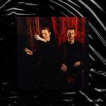
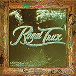

Music Reviews
-

Kiwi Jr. Football Money
The Toronto-based four-piece's debut collects sharp-witted observations about living in a big, lively city.
Juan Edgardo Rodríguez reviews... -

These New Puritans Inside The Rose
On Inside The Rose, These New Puritans chisel their rimy, amorphous arrangements into a finely pointed portrait of emotional disintegration.
Juan Edgardo Rodríguez reviews... -

Matmos Plastic Anniversary
No plastic objects used in the making of this record will be hung for posterity on the walls of any Hard Rock Café, but don’t let that dissuade you from giving Matmos’ Plastic Anniversary a listen.
Sean Caldwell recycles… -

Helado Negro This Is How You Smile
On what is easily his best and most powerful collection of songs yet, Helado Negro turns inward and offers an intimate portrait of enduring and overcoming the struggles of growing up in an immigrant household.
Jeremy Monroe reviews... -
Foals Everything Not Saved Will Be Lost - Part 1
On their sixth LP, the Oxford, England four-piece create a testament to their longevity but also consider where this new era is going to take them.
Matthew Smith reviews... -

Stella Donnelly Beware the Dogs
The Perth, Australia songwriter's fun, engaging debut targets misogyny–and bemoans relationship missteps–with decidedly imperfect candor.
Juan Edgardo Rodríguez reviews... -
SASAMI SASAMI
SASAMI’s debut displays her immense potential, with dreamy, hazy tunes.
Joe Marvilli dives into SASAMI's dusky, atmospheric songs... -

Royal Trux White Stuff
The first studio album from Royal Trux in 19 years, this White Stuff is sold in a mixed bag.
Sean Caldwell reviews... -
Telekinesis Effluxion
The Michael Benjamin Lerner project's fifth LP is wholesome, punchy power-pop that sounds timeless and edgeless, albeit with some welcome changes.
Juan Edgardo Rodríguez reviews... -
Sir Babygirl Crush on Me
Sir Babygirl's debut is a whirlwind of ecstatic pop, rockstar attitude and genre-vaporizing mashups. It's an absolute blast.
Joe Marvilli gets lost in energetic, theatrical pop...